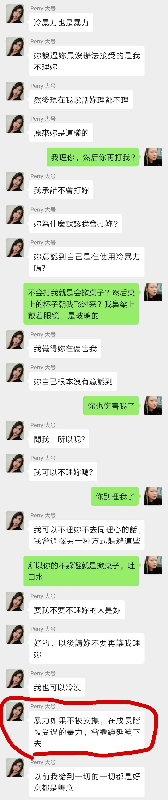

幸存者自述：开放式关系、字母圈关系下的强奸
壮壮姐姐 使女的证言 2022-01-24 18:38
越发觉得大家已经不记得这件事了。
但是我的发声还没有停止。
前段时间在到处借钱去缴大别墅的房租，所以消失了一段时间。这段时间现任不在，我在可以负荷的情况下还是决定持续发声。
人物
大壮：也就是当事人，我
Perry：施暴者，一名跨性别女性导演，大壮的前任开放式关系伴侣、大壮的前任『安全、理智、知情同意』关系伴侣
逼问审讯
之前提到的精神暴力的部分，实在是太恶劣了，我也不能接受TA道歉信里所表述的这是从s/m的关系变成Dom/Sub的关系。按照TA的逻辑，Sub就应该这样被逼问被审讯？

Perry完全就是双重标准，打着开放式关系的幌子却干着三妻四妾的事。不停地质问，要求我不停地道歉，不依不饶的态度却完全不反思自己的行为。占有欲和控制欲强也就罢了，还做不到对伴侣基本的尊重态度。说我和Loki的行为算是出轨，那TA自己和其TA女性的行为难道就不算出轨了？这是什么双标逻辑？？？
（详细聊天记录请看阅读原文中的——大壮遇到喜欢自己的人）
言语攻击
现在回忆起来，到这段关系后期，我越来越无法和TA两个人单独沟通，有第三个人在场，就可以看出来TA的不对，并且指出来。而且TA在第三人在场的时候，讲话会拿捏着讲。
TA每次不顾我的感受讲很多的时候，我就会把自己封闭起来，把自己抽离出来，试图感受不到任何痛苦，但那些言语的攻击就实实在在的落在了我身上，我心里。

大壮表示想找别人，但是并没有找
我因为疼痛抽离的时候TA就会说我在冷暴力TA，说我对TA使用了暴力，所以TA也要让我难受。这个可怕的人恐怕早就忘了我满含爱意注视着TA的状态了。TA是否反思过，我是如何一步一步从满含爱意的眼神变成冷漠再变成恨。是的，我是恨的，在我发觉这一切之后，在我回朔这一切之后，在我低头看自己被摧毁成什么样之后。我对我这段亲密关系失望到了一个极点。
曾经在眼睛里藏不住的爱意

对我动手之后还要求我给TA道歉
利用跨性别身份
在我看来，这个人就是打着跨性别的旗号和身份来增加自己的曝光度。TA为跨性别做了什么贡献么？还是TA有多么热爱这个社群么？没有。TA所有接受的采访都在说自己如何如何光鲜亮丽。最夸张的是，打着跨性别女性的旗号混进全部是生理女性的亲密关系交流群，但却和群主说想用丁丁赚钱，说群里都是寂寞的姐姐。我不知道那个群的群主会怎么看待跨性别女性。而TA的这个行为并没有和关系内的我以及A君讲。我相信，TA手机里有更多这样的对话，但我不喜欢翻别人的手机，而TA对我对A君都做过强制翻看手机的行为。
女性视角？？？？？？？
自认为贴心的什么金钱性交易但事实上完全是想骗炮吧？这边装着可怜那边义正言辞冠冕堂皇地想骗炮。她只是把自己包装成跨性别的人设并借此骗炮！Perry说要发挥丁丁的作用？？？这个话真的非常迷惑了...并且从法律角度来讲金钱性交易是绝对违法犯罪的行为！
让我感到极度羞耻和愧疚的是，我向我的性少数机构的朋友们介绍了这个人。我非常羞愧。我也和这些机构说一声抱歉，实在是对不起。TA是个在亲密关系中如此这般的人，但我一直没说出来。
开放式关系
开放式关系也是同样的，这件事情刚曝光的时候，有一个女生，自称是TA的现任，跑来找我。我看了这个女生的朋友圈，其中有一个发文说这个姑娘想选择开放式关系，Perry表示可以接受，只是需要告诉TA。开放式关系里的每个人都有知情权 所以这个姑娘要是有别的人喜欢她，她也喜欢对方的话是有必要让对方知道她这个情况的。
我看到这一条的时候超级想冲过去和这个姑娘说，你看清你的选择吧，这个人就是自己背地里做什么都可以，但是对你严加看管的那种，嘴上说着你在我这里得不到的满足你就去找别人吧，你去谈恋爱吧，我不想和你谈恋爱，我都过了那个年纪了。
但是妹子你知道么，当我的现任出现了之后，TA就百般阻挠，各种使性子，不哄绝对不行的那种。我和我现任想做什么都需要事先和TA报备，一起洗个澡TA都要站在厕所门口听动静。反观TA呢，TA就会很圆滑的说一句，TA和别人有亲密接触的可能性。就这么一句话哦，什么是亲密接触？怎么定义亲密接触？可能还是一定会？
当我指出TA主动询问和TA发生关系的妹子可不可以无套这件事情不太好，TA还说性行为就是默认无套的。我认为性行为需要有套只是我的认为，大部分人是默认无套的。我和A君都被TA关系内强奸过。
TA不断的表明TA带套没感觉，不断的嫌弃我松，不断的强调自己从小就割包皮所以龟头没有其TA人敏感，再加上我几乎大部分时间都和TA待在一起我知道TA是否有和其TA人发生性行为的情况下，我同意和TA无套了。刚开始的时候TA表示TA很愉悦，所以我是愉悦并且自愿的。
但是当我圣诞节去找我现任的时候，TA把一个妹子偷偷叫到家里，是偷偷哦，在我发现之前一直没有和我说，不管事前还是事后，明明有那么多时间那么多机会可以讲，但是就是没有和我讲。我发现了才开始狡辩，说我都不在乎TA了，所以TA也不要在乎我的感受。
好，就算这些都不重要。
最最要命的事情发生了，我们又发生性行为的时候，我问TA，你和圣诞节那个女生有没有带套？我确认我在当下吐字清晰，TA一定听得到并且听清楚了，TA故意不回答，然后就直接进去了。
事情结束之后TA和我讲TA和那个妹子没有带套。我当下觉得五雷轰顶！我极其恶心！我恨不得把我的阴道掏出来用84消毒液洗刷！我不能接受这样的事！！TA就是强奸我！事后我向TA质问的时候，TA一句当下只是想要更亲密就一笔带过了。
Perry的现任，如果你看到这里，我真的提醒你一句，这个人控制欲和占有欲不是一点点。哦，TA可能会和你说什么我和大壮是Dom和Sub的关系啦之类的blabla我对你是不会这样的。可是A君和TA并不是这种关系。A君同样在TA的占有和控制下无法忍受。最关键的点还是这个人极度双标。
Perry的现任和我说，你放心TA不敢对我这样的。TA当然不敢明目张胆，但是潜移默化温水煮青蛙才是最要命的吧。我是真心希望妹子你能幸福的。但愿这个人就此收手吧，真正的去尊重对方，去尊重关系内的每一个人。
最后大壮想说
我花了一年的时间看清这个人，很多朋友知道这件事之后会说，这是真的幺？不可置信！你们当初那么恩爱！
对，这个人好的时候是挺好的，会做饭、会体贴，就像TA看起来的那样好。可是疯起来就太可怕了。一朝被蛇咬十年怕井绳讲的就是我现在的情况。我没办法再去肆意的大力的全心全意没有退路的再去爱一个人了。
精神暴力是非常可怕的，那是一种长时间的不认可、贬低、谴责、控制。
在面对我现任的时候，我会觉得有一些愧疚，我给的爱，并不是我最多的爱，也不是最深的爱。甚至有一些想要和现任一直走到结婚的想法，我很恐惧自己开始产生这样的心理。
但同样是因为现任不温不火的陪伴，我感觉到自己被爱着被滋养着被修复着。我的现任不会责怪我这不好那不好，不会说我不行，更不会在亲密时光说我不如别的女人。这些由Perry留给我的伤害，都在一点一滴的被我的现任修复着。没那么齁甜，没那么速效，但让我更有安全感。
Perry对于我而言象是毒药，上瘾但是致命。现任对于我而言象是中药，暖暖的很贴心。
感谢大家愿意看到这里
感谢你愿意看到这里，我本不想把一篇揭发对方精神暴力的文章弄的这么儿女情长，我必须冷静的抽离出来，才能让我不陷入仇恨中。但我又想让所有人知道这个人对我做了怎样过分的事。TA会对我做，就有可能会对你做，但并不是一定会对你做。
不断的回看之前的聊天记录的截图让我情绪极度崩溃，我也想通了，这辈子我不会再和这个人有交集了，我可以不去强迫自己面对那些。但是如果你是一个会和Perry有亲密关系的可能性的人，你可以点开阅读原文看一下我们聊天的一个常态。你就会知道，并不是我无情，是我的爱都被消磨光了。和这个人相处，请务必有所保留。
感谢在我的家暴声援群的29个小伙伴！感谢大家一路陪伴，出谋划策。感谢大家愿意相信我，愿意为我发声。
感谢我的现任，在我崩溃的时候鼓励我，陪伴我。
我愿意把我的故事讲出来给更多的人听，这个伤口终于在不断撒盐的情况下结痂了。从今往后，Perry没办法再伤到我也没办法再左右我的情绪，别想控制我！！除了站出来给大家讲述你曾经做过的事，这辈子都不想再和你有牵扯了！太恶心了！
在上海的小伙伴可以来大别墅坐坐，大壮可以带你们参观家暴场景。

文学是最徒劳的，且是滑稽的徒劳。写这么多，我不能拯救任何人，甚至不能拯救自己。这么多年，我写这么多，我还不如拿把刀冲进去杀了他。真的。我每天写八个小时，写的过程中痛苦不堪，泪流满面。写完以后再看，最可怕的就是：我所写的、最可怕的事，竟然是真实发生过的事。而我能做的只有写。女孩子被伤害了。女孩子在读者读到这段对话的当下也正在被伤害。而恶人还高高挂在招牌上。我恨透了自己只会写字。
——《房思琪的初恋乐园》